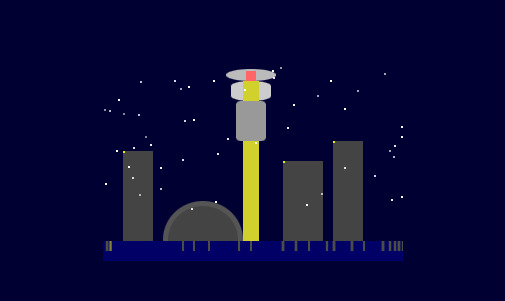

After watching this Ethan Mollick video creating a flappy squid game in Claude 3.5 Sonnet, I decided to make a pixelated Toronto animation with code that could run in a 1990s web browser. After only a few prompts, Claude generated this animation. I added a link to it in the middle "o" of the toronto at top of this blog. I also added the raw code to my codepen.io page. All this in less than 5 minutes of "work".
This was my initial prompt to Claude:
create an animation that can run inside a 1990s web browser of the city of Toronto at night .